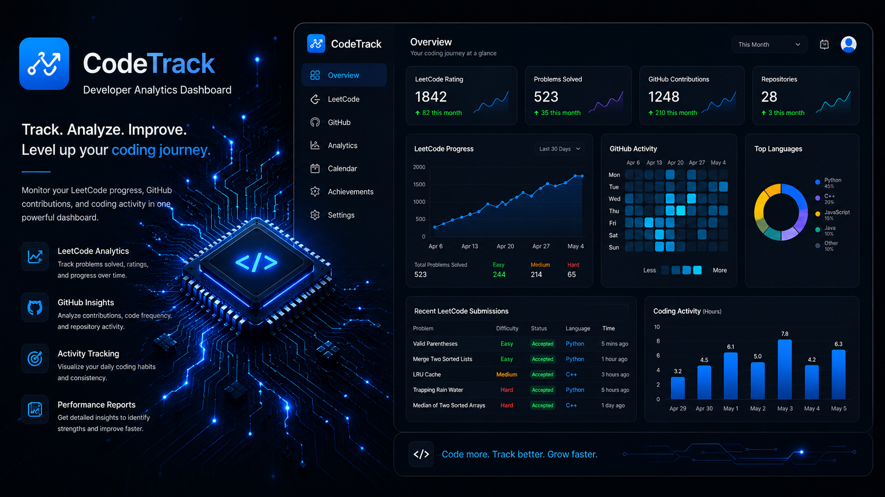
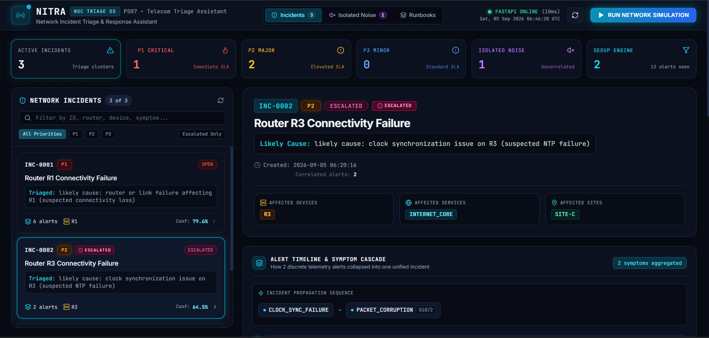
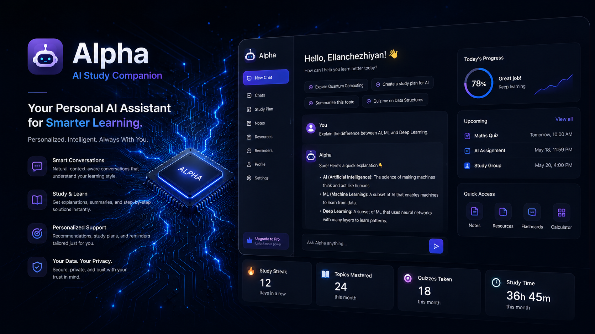
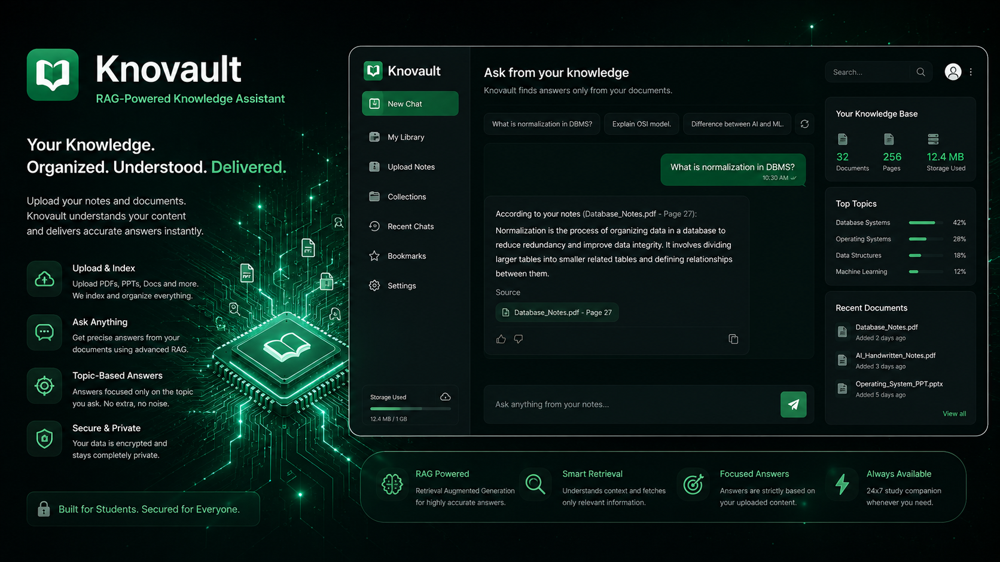

Building intelligent systems at the intersection of AI, data and technology.
I turn messy, real-world data into something people can act on — offline AI assistants, retrieval systems that reason over documents, and dashboards that make performance visible at a glance.
I'm an Artificial Intelligence and Data Science undergraduate who likes turning messy, real-world datasets into something people can actually act on. My hands-on work spans data analytics and business intelligence — cleaning and validating data, then building dashboards that make trends visible at a glance — alongside a growing focus on applied AI, including offline assistants, retrieval-augmented systems, and the chatbots and tooling that sit on top of them.
I care about the same thing every time: taking a hard, technical problem and shipping something that genuinely works.
A selection of dashboards and applied AI systems — each built around real data and real usability.

A dashboard that tracks student coding activity across LeetCode and GitHub automatically, pulling data through usernames and profile links via API keys, then using Python to analyse and visualise performance.

Network Incident Triage & Response Assistant for telecom operations. It groups related telemetry alerts into triage clusters, surfaces a likely cause for each incident, and presents affected devices, services and sites with an alert timeline.

A personal AI assistant built to work offline via Ollama, with multi-stage message processing for relevance and personalization, deployed as a working website.

Upload PDFs, slides, docs and get direct answers pulled from that material using chunking, vector DB retrieval and an LLM to shape clear, formatted responses.
Open to data analytics and AI internship opportunities. Reach out directly or find me on the platforms below.